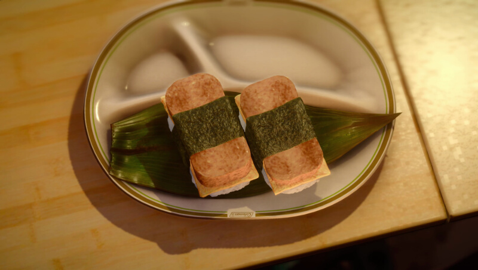

Home
Mystery Meat Sushi
Active cooking time: 20-25 mins | Total cooking time: 20-25 mins | Serves 1-2

While the origins of the meat in this sushi might forever remain a
mystery on Eos, here on Earth it is commonly referred to as Spam
musubi, a popular Hawaiian dish.
Ingredients
- 11⁄4 - 11⁄2 cups uncooked rice (250-300g)
- 1⁄2 - 3⁄4 can of Spam (keep the can)
- 2 eggs (1⁄2 egg per musubi)
- 1⁄2 tbsp cooking oil (7.5mL)
- (optional) salt, to taste
- 1 piece of nori, cut into 4 1 inch (2.5cm) wide pieces
How to
- Set the rice to cook.
- Cut the spam to the desired thickness and fry until surface is brown.
- Whisk the egg in a bowl until smooth.
- In a heated and oiled pan, pour half an egg in a thin layer. When it
is almost cooked, use a pair of chopsticks to fold it approximately
into the size of the spam slice, or bigger.
- When the rice is cooked, season with salt, if desired, and fluff the
rice with a wet rice paddle.
- Line the inside of the Spam can with plastic wrap, and fill with rice
up to the top of the spam can. Do not compact rice before reaching
the top.
- Press the rice down with a spoon or your fingers, until compacted. If
the rice starts to stick, dampen the spoon or finger. Remove the rice
from the can by pulling on the plastic wrap.
- Assemble the sushi as shown above, making sure the seaweed is
long enough to wrap around the spam and egg to stick onto the
bottom of the rice. Repeat steps 6-8 to make 3-4 sushi.
- Enjoy!
Effect(s)
Strength +50, HP +100
Source